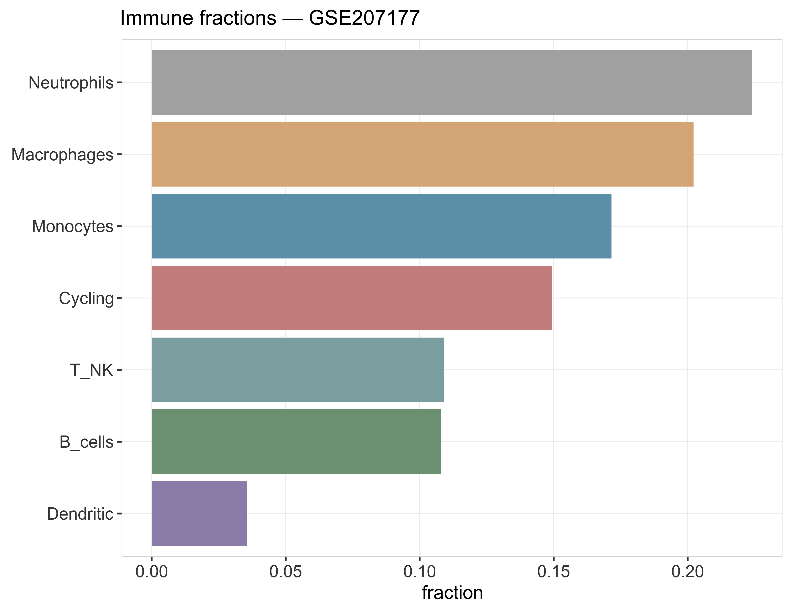
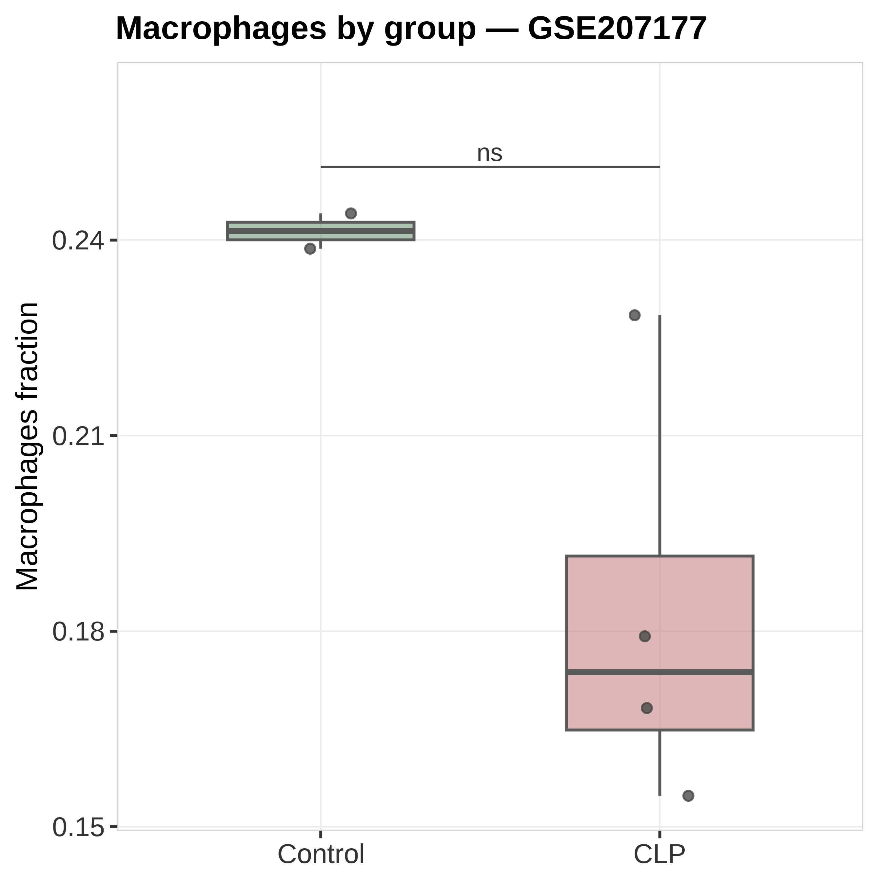

状态：PASS
已 source 本技能 脚本_scripts/: 运行骨架_runSkeleton.R
data_provenance: REAL — GSE207177 GSE207177_CIBERSORT免疫浸润.csv（书清；method 字段见原表）。
缓存：数据文件/real_GSE207177_CIBERSORT_fractions.csv。
"skill","stage","n_rows","n_cols","n_samples","group_source","toy","data_provenance","accession","sourced_skill_scripts","notes","checked_at" "ImmuneInfiltration","post",6,7,6,"GSE207177 CIBERSORT-like fractions",FALSE,"REAL",NA,"已 source 本技能 脚本_scripts/: 运行骨架_runSkeleton.R","immune frac + Macrophages score brackets; data_provenance=REAL","2026-07-19 20:01:08"


REAL GSE207177：书清 CIBERSORT 风格免疫分数均值柱 + Macrophages Control vs CLP 箱线括号。data_provenance=REAL。
生成时间：2026-07-19 20:01:09 · 报告规范：统一交付规范_DeliveryStandards · 版本 v1